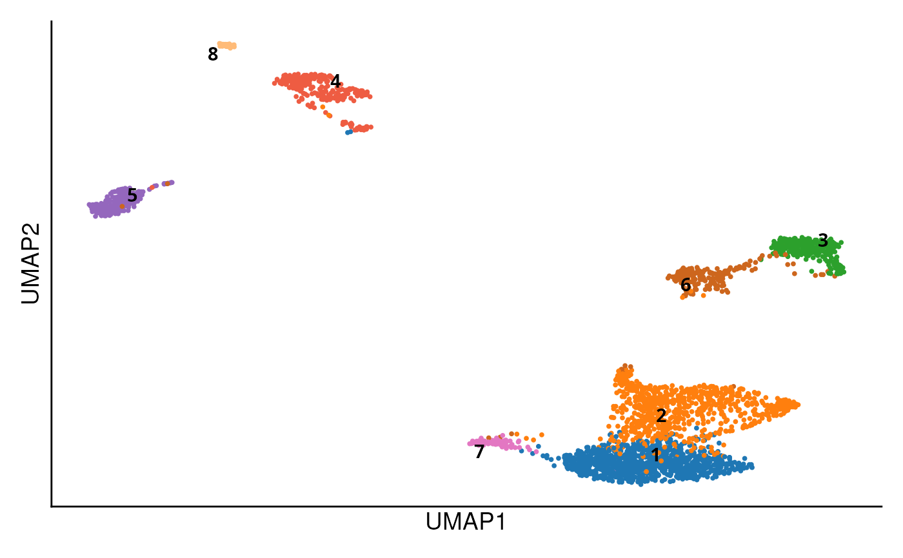
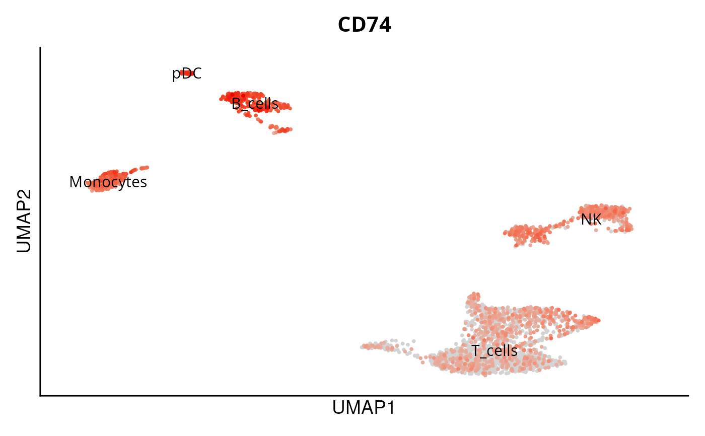

Creates a polished UMAP plot using Seurat's DimPlot or FeaturePlot functions. It allows customization of colors, labels, and other plot elements for better visualisation. The function handles both cluster-based visualisations and gene-based visualisations in a UMAP plot. Ideal for refining UMAP outputs with added flexibility and enhanced presentation.
Usage
DO.UMAP(
sce_object,
FeaturePlot = FALSE,
features = NULL,
group.by = "seurat_clusters",
umap_colors = NULL,
text_size = 14,
label = TRUE,
order = TRUE,
plot.title = TRUE,
legend.position = "none",
...
)Arguments
- sce_object
The seurat or SCE object
- FeaturePlot
Is it going to be a Dimplot or a FeaturePlot?
- features
features for Featureplot
- group.by
grouping of plot in DImplot and defines in featureplot the labels
- umap_colors
what colors to use for UMAP, specify as vector
- text_size
Size of text
- label
label the clusters on the plot by group.by column
- order
Boolean determining whether to plot cells in order of expression.
- plot.title
title for UMAP
- legend.position
specify legend position
- ...
Further arguments passed to DimPlot or FeaturePlot function from Seurat
Examples
sce_data <- readRDS(system.file("extdata", "sce_data.rds", package = "DOtools"))
DO.UMAP(
sce_object = sce_data,
group.by="seurat_clusters"
)

DO.UMAP(
sce_object = sce_data,
FeaturePlot=TRUE,
features=c("BAG2","CD74")
)
#> Warning: The `slot` argument of `FetchData()` is deprecated as of SeuratObject 5.0.0.
#> ℹ Please use the `layer` argument instead.
#> ℹ The deprecated feature was likely used in the Seurat package.
#> Please report the issue at <https://github.com/satijalab/seurat/issues>.
#> Warning: The following requested variables were not found: BAG2
